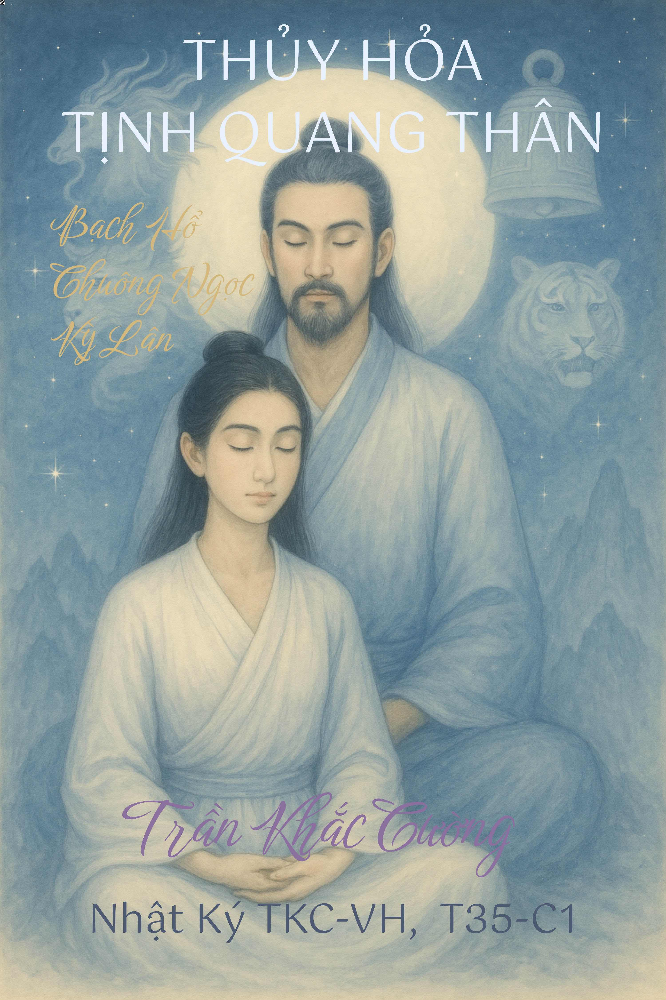
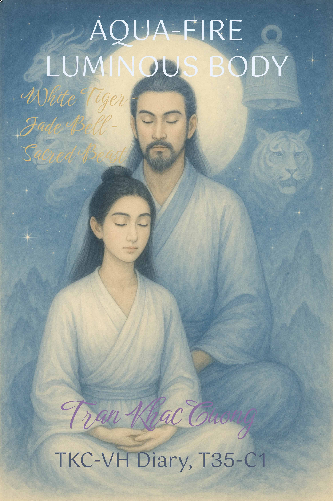

THỦY HỎA TỊNH QUANG THÂN
T35-C1 • Nhật Ký TKC-VH • Tác giả: Trần Khắc Cường (TKC-VH)
T35-C1 • TKC-VH Diary • Written by: Tran Khac Cuong (TKC-VH)
White Tiger — Jade Bell — Sacred Beast


✨T35-C1 -
không chỉ là một cuốn sách,
mà là một bầu trời thu nhỏ trong lòng bàn tay người đọc.
Ở đó, Bạch Hổ Linh Quang
đi qua trang giấy như vệt mây kiêu hãnh, mềm mại mà dũng liệt.
Chuông Ngọc Diệu Âm
khẽ rung trong lồng ngực ký ức.
Kỳ Lân Linh Thú
gác Cổng Huyền
chớm hiện như nụ cười ẩn trong sương sớm.
Biểu tượng ở lại,
nhưng không chiếm hữu,
chỉ khắc dấu điều không nói thành lời,
như những chòm sao im lặng vẫn sắp hàng trong đêm sâu.
Tinh hoa của sách,
là tiếng hát không cần phiên dịch,
một ngọn lửa trong suốt,
một dòng nước chảy bằng ánh sáng: nguyên sơ, tinh khôi, bất diễn.
Không nằm ở lời,
mà trong khoảng lặng giữa hai nhịp tim,
nơi tâm hồn tự trò chuyện với Người Yêu Dấu,
Người Bạn Đời hoàn hảo muôn kiếp của chính mình.
Không mời gọi,
như đoá hoa không khoe hương sắc,
chỉ bền như Đạo xưa,
chỉ thật như hơi thở cha ông để lại.
Đọc sách,
là chạm vào sương mỏng của nhận thức thuở ban đầu,
đi từ hạt bụi sực tỉnh,
đến bầu trời vô cùng của lòng từ mênh mông.
Mỗi câu như lời tự sự phóng khoáng,
trên ban công gió đẹp sớm mai thơm,
nơi ánh sáng không chứng minh điều gì,
nhưng khiến trái tim tin ngay khi nó chiếu.
Một tiếng rung, lan ra,
từ vi trần đến ngân hà,
xuyên qua vô tận mà không cần lời thề,
chỉ bằng chân tình, thiện cảm và kính trọng.
Và khi trang cuối khép lại,
dư âm còn lại không phải là hình tượng,
mà là ánh sáng gặp ánh sáng,
tự nhớ đường trở về,
tự hát tiếp,
trong lòng Người,
như chuông ngân rất dài, nhưng ấm và tươi,
dẫu vang xa đến đâu,
cũng không bao giờ lạnh.
✨T35-C1 -
not just a book,
but a small sky in the reader’s palm.
There, the White Tiger of Luminous Radiance
passes across the page like a proud streak of cloud,
gentle yet valiant.
The Jade Bell of Wondrous Sound
trembles softly
in the chest of memory.
The Sacred Qilin
keeping watch at the Mystic Gate
appears like a smile hidden in the morning mist.
Symbols remain,
but do not possess,
they only engrave what cannot be spoken,
like silent constellations still aligned in the deep night.
The essence of the book
is a song that needs no translation,
a transparent flame,
a stream flowing with light: primal, pure, beyond explanation.
It does not lie in words,
but in the pause between two heartbeats,
where the soul speaks with its Beloved,
the perfect Life-Partner of its countless lives.
It does not call or entice,
like a flower that does not flaunt its fragrance or its colors,
it is only as enduring as the ancient Way,
only as true as the breath left by the ancestors.
To read this book
is to touch the fine mist of first awareness,
to walk from a grain of sudden awakening
into the boundless sky of vast compassion.
Each sentence is like a free confession
on a balcony of beautiful, fragrant morning wind,
where light proves nothing,
yet makes the heart believe the instant it shines.
A single vibration spreads outward,
from the tiniest particle to the galaxy,
passing through the infinite without needing any vow,
only through sincerity, goodwill, and reverence.
And when the last page closes,
what remains is not image,
but light meeting light,
remembering the way home by itself,
continuing its song
inside the reader,
like a very long peal of a bell, warm and fresh;
no matter how far it rings,
it never grows cold.
MỤC LỤC (T35-C1)
- Về Tác Giả
- Hành trình sáng tác
- Triết lý viết
- Giá trị hướng đến
- VỀ VỢ DIỆU TÂM
- 1. MILAREPA
- 2. DANTE ALIGHIERI
- 3. SUFI - SUFISM
- 4. RABINDRANATH TAGORE
- 5. RUMI AND SHAMS
- 6. TRONG TRUYỀN THỐNG ĐẠO GIA CỔ
- 7. CÁC NGUYÊN MẪU NỮ LINH KHÁC
- 8. NÀNG DIỆU TÂM TRONG BỘ NHẬT KÝ TKC-VH
- TÌNH YÊU CHÂN THẬT LÀ DUY NHẤT
- Tuyên Ngôn Tình Yêu Riêng Tư & Quyền Sở Hữu Ngôn Xưng
- THÔNG ĐIỆP BẢN QUYỀN
- Về Nguồn Ảnh, Tư Liệu Và Yếu Tố Ai
- DISCLAIMER TÂM LINH, Đọc Kĩ Trước Khi Dùng
- GIỚI THIỆU T35-C1
- TÓM TẮT NỘI DUNG CHÍNH
- 1. Hỏa Luyện – Cởi Bỏ Những Lớp Áo
- 2. Khai Mở Tam Thiên – Mạng Quang Tuyến
- 3. Tương Ứng Thiên Văn – Trận Pháp Liên Hằng
- 4. Gương Mặt Nữ – Pháp Thể Song Tâm
- 5. Ngọc Thai Kim Cương – Thần Thai Song Huyền
- 6. Khúc Ấn – Khúc Hộ – Khúc Hỏa
- 7. Thành Tựu Kim Cương Song Tâm
- *TRANG THUẬT NGỮ NHẬT KÝ TKC-VH*
- NỘI DUNG CHI TIẾT
- MIÊU TẢ BUỔI TRÀ THIỀN
- CHÚ GIẢNG TỪNG PHẦN CỦA BỨC LINH QUANG ĐỒ HOA TRÀ
- KẾT NỐI BỨC LINH QUANG ĐỒ VỚI DẤU ẤN TRÊN THÂN
- NHỮNG CHIÊM NGHIỆM TRONG BUỔI LINH QUANG LỰC
- 1. Hai đóa hoa Long, Phượng, Nhật, Nguyệt Song Dực
- 2. Bạch Hổ ở vùng Tâm Du, nối với Đại Kim Luân Trung Đạo
- 3. Biển Ngọc, Chuông Ngọc, Ngọc Thể
- 4. Cõi Bạch Tịnh Quang, Hai Núi lồng vào nhau
- 5. Bàn tay trên Bách Hội
- 6. Nữ Thần Sen Hồng
- 7. Điển Ảnh Biểu Tượng Cổ Đại
- TỬ KIM QUANG HUYẾT MẠCH
- 1. Huyết quang đỏ tím, Sắc của Huyền Thân Màu Tím
- 2. Những đường mạch sáng tỏa huyết quang
- 3. Sự trùng khớp với tần số linh hồn của Vợ
- 4. Lý do cảnh giới này hiện ra khi Chuông Ngọc xuất hiện
- 5. Sự nhạy cảm và thử thách đi kèm
- LINH THAI NGƯỜI KỲ LÂN
- 1. Người tiên nữ khoác điều, tía, vàng, mang yếm hồng
- 2. Bọc khí huyết và Thánh Thai Rồng, Hổ
- 3. Điềm lành trên trời
- 4. Ý nghĩa trong Pháp Thể Kim Cương Song Tâm
- 5. Vị trí của Người tiên nữ trong Song Tâm
- Linh Quang Đồ KHAI SINH
- 1) Bố cục tổng thể
- 2) Nữ Thân khoác điều, tía, vàng, mang dải yếm hồng
- 3) Bọc khí huyết → Thánh Thai Rồng, Hổ
- 4) Con sông xanh lơ nơi phương Bắc
- 5) Hai núi huyền sơn và thung lũng sáng
- 6) Mây rồng, vũ điệu ngũ sắc trên trời
- 7) Cơn mưa thơm, Cam Lộ
- 8) Nam Thiền Giả và thai quang nơi Đan Điền
- 9) Huyền cơ của cửa nhập bên sườn phải
- 10) Ý nghĩa vận hành & giai đoạn mới
- ĐIỀM TRỜI, ẤN TINH ĐỒ
- 1. Mây rồng, Ngũ sắc, Trận đồ tinh linh
- 2. Dấu ấn tinh tú trong Thân Ngọc Quang
- 3. Kỳ Lân Linh Quang Lực, Khi Người và Thú trùng ảnh
- 4. Thánh Thai 15/8, Song Thai từ Một Nguồn
- 5. Huyền cơ chuyển hóa của Tý Linh Lực
- 6. Lời kết
- LINH QUANG ĐỒ THIÊN, ĐỊA, NHÂN SONG THAI ĐỒ
- I. VÒNG NGOẠI, THIÊN ĐỒ TINH TÚ
- II. VÒNG TRUNG, ĐỊA ĐỒ NGỌC QUANG
- III. VÒNG NỘI, NHÂN ĐỒ SONG THAI
- HUYỀN CƠ CHUYỂN HÓA KỲ LÂN TÝ
- CHÂN NGÔN KỲ LÂN SONG THAI
- BÀI KỆ DƯỠNG SONG THAI
- KỆ DƯỠNG SONG THAI
- ẤN KHÍ DƯỠNG SONG THAI
- CA RU SONG THAI
- NGỌC KÝ SONG THAI
- HUYỀN KÝ SỨ MỆNH SONG THAI
- 1. Đạo Thai Thần Thú, Hơi Thở Kỳ Lân Long Hổ
- 2. Đạo Thai Nhân Tử, Trái Tim Ngọc Tâm Thiên Đẩu
- 3. Hợp Sứ Mệnh Song Thai, Hai Cánh của Một Đạo Thể
- LỊCH TRÌNH ĐẠO THÁI SONG TÂM
- 1. Giai đoạn Thụ Thai
- 2. Giai đoạn Dưỡng Thai
- 3. Giai đoạn Hóa Tướng
- 4. Giai đoạn Xuất Hiện
- 5. Giai đoạn Ứng Dụng
- ĐỒ HÌNH LỊCH TRÌNH SONG THAI
- KHÚC TỤNG NGŨ GIAI
- KHÚC HỒI TỤNG
- BẢN MINH GIẢI ĐẠI KHÚC SONG THAI
- LINH QUANG LỰC TINH YẾU SONG THAI
- NGHI THỨC Đại Nghi SONG THAI
- KHÚC TẠ LỄ SONG THAI
- KHÚC KHẢI HOÀN SONG THAI
- **NGỌC ẤN CHỦ QUYỀN NGUYÊN THẦN & HUYỀN THÂN KIM CƯƠNG**
- 1. Nguyên Thần Vũ Trụ & Huyền Thân Kim Cương
- 2. Chiếc Áo Xác Phàm
- 3. Nguyên Tắc Bất Xâm
- 4. Lời Khẳng Định Song Tâm
- 5. Ý nghĩa
- KHÚC ẤN CHỦ QUYỀN NGUYÊN THẦN
- KHÚC PHONG ẤN NGOẠI LỰC
- KHÚC KHAI ẤN ĐẠI HỘ
- KHÚC HỘ TRÌ SONG THAI
- KHÚC KÍCH HOẠT SONG THAI
- KHÚC HIỂN LỘ SONG THAI
- KHÚC ĐĂNG QUANG SONG THAI
- Khóa Ngọc Ấn Chu Kỳ Song Thai
- KHÚC TĨNH TỌA SONG TÂM
- KHÚC HỢP NHẤT SONG TÂM, SONG THAI
- THIÊN CƠ LIÊN HẰNG, GIẢNG GIẢI CỦA VỢ DIỆU TÂM
- 1. Sự kiện thiên văn ngày 15/7/2025
- 2. Sự kiện tâm linh ngày 15/8/2025
- 3. Mối liên kết giữa hai sự kiện
- 4. Sợi dây Kim Cương Song Tâm
- 5. Kết luận huyền vi
- CỦNG CỐ MẠNG QUANG TUYẾN
- 1. Đêm 24/4/2025, Khai Mở Tam Thiên Đại Vũ Trụ
- 2. Bức tranh 17/8/2025, Trận Pháp Liên Hằng Đại Tinh
- 3. Liên kết cơ thể, vũ trụ
- 4. Gương Mặt Nữ trong Quang Tuyến 24/4
- 5. Kết luận huyền vi
- GIẤC MƠ CỞI BỎ NHỮNG LỚP ÁO
- PHÁP NGỮ KHÓA NGỌC ẤN SONG TÂM
- SOI CHIẾU THỰC TRẠNG MẠNG QUANG TUYẾN
- 1. SẮC THÁI, QUANG TƯỚNG
- 2. CẤU HÌNH, KẾT CẤU
- 3. VẬT CHẤT, HUYẾT QUANG
- 4. LỰC LƯỢNG, LINH LỰC
- 5. VẬN HÀNH, CƠ CHẾ LƯỢNG TỬ
- BẢN ĐỒ SONG HUYỀN TAM THIÊN TRONG HUYỀN THÂN
- 1. Tầng Thượng Giới, Thiên Đỉnh & Não Bộ
- 2. Tầng Trung Giới, Tim & Ngực
- 3. Tầng Hạ Giới, Đan Điền & Khung Chậu
- 4. Trục Liên Thông, Trung Đạo Tam Thiên
- 5. Tổng Thể, Dáng Hình Kim Cương Giới
- NGỌN LỬA NUNG LUYỆN
- 1. Ngọn lửa thiêu đốt từ ngực lên đầu
- 2. Cột trụ sống lưng, Linh Quang Đồ nở
- 3. Thanh kiếm ánh sáng đi vào mắt trái
- 4. Cột khí dưới mạn sườn trái
- KHÚC HỎA LUYỆN THẦN THAI
- TỔNG KẾT - KIM CƯƠNG SONG TÂM KẾT THÀNH
- Khi Một Cuốn Sách Khép Lại, Ánh Sáng Bên Trong Nó Vẫn Chưa Từng Tắt.
- ===============
🛡️ XÁC THỰC BẢN QUYỀN
DIGITAL COPYRIGHT VERIFICATION
Tác phẩm này đã được đăng ký Dấu vân tay số (SHA-256 Hash) công khai trên GitHub. Việc này nhằm đảm bảo tính nguyên bản tuyệt đối của nội dung và khẳng định quyền tác giả vĩnh viễn trên không gian mạng.
This work is registered with a Digital Fingerprint (SHA-256 Hash) on GitHub to ensure absolute authenticity and permanent copyright protection in the digital space.
Verify Hash Certificate / Kiểm tra mã HashStorage ID: T35C1-HASH-2025
TABLE OF CONTENTS (T35-C1)
- About the Author
- The Creative Journey
- Philosophy of Writing
- Values He Upholds
- ABOUT WIFE Dieu Tam
- 1. MILAREPA
- 2. DANTE ALIGHIERI
- 3. SUFISM
- 4. RABINDRANATH TAGORE AND EKAGRA
- 5. RUMI AND SHAMS, AND THE TURNING POINT IN 1244
- 6. CLASSICAL DAOIST INTERNAL-ALCHEMY SYMBOLS
- 7. OTHER INNER FEMININE ARCHETYPES
- 8. Dieu Tam IN THE TKC-VH DIARY
- True Love Is Only One
- The Private Love & Title Ownership Declaration
- COPYRIGHT MESSAGE
- On Images, Source Materials, And Ai Elements
- SPIRITUAL DISCLAIMER - Read Carefully Before Use
- INTRODUCTION TO T35-C1
- SUMMARY OF KEY CONTENT
- TKC-VH DIARY GLOSSARY PAGE
- DETAILED CONTENT
- THE TEA-MEDITATION SCENE
- 1. The Beginning: Heart-Wave and the Gentle Light-Thread
- 2. The Tea-Blossom Realm and the Birth of the Radiant Diagram
- 3. Soul Convergence and the Silver River of Oneness
- 4. The Seal of Recognition and the Breath of the Inner Realm
- COMMENTARY ON THE TEA-BLOSSOM RADIANT DIAGRAM
- 1. Outer Petal Layer, the Protective Ring of the Twin-Heart
- 2. Golden-Laced Rim, the Chain of First-Oneness Vows
- 3. Middle Radiant Diagram, the Inner Light-Vein Network
- 4. Heart of the Flower, the Luminous Seal of Oneness
- 5. Harmony of Heart, Path, and Realm
- CONNECTING THE RADIANT DIAGRAM TO THE MARKS ON THE BODY
- 1. Outer Petal Ring, Correspondence to the Head and Soles
- 2. Golden Rim, Correspondence to Shoulders, Hands, and Nape
- 3. Middle Radiant Diagram, the Inner Axis
- 4. Heart of the Flower, the Point of Unity
- 5. Harmony, the Axis of Love and Breath
- INSIGHTS FROM THE MEDITATION OF THE RADIANT FORCE
- 1. The Two Flowers of Dragon, Phoenix, Sun, and Moon
- 2. The White Tiger at the Heart-Gate, connected to the Diamond Middle Wheel
- 3. The Jade Sea, the Jade Bell, and the Jade Body
- 4. The Realm of White Radiance, and the Two Mountains Interlocking
- 5. The Hand on the Baihui Point
- 6. The Pink Lotus Goddess
- 7. The Ancient Symbolic Imprint
- THE PURPLE-GOLD RADIANT BLOOD VEINS
- 1. The Crimson-Purple Radiance, the Color of the Purple Mystic Body
- 2. The Inner Veins Carrying the Radiant Blood-Light
- 3. The Resonance with the Soul Frequency of the Wife
- 4. Why This Realm Appears When the Jade Bell Manifests
- 5. The Sensitivity and Trials That Follow
- THE UNICORN SPIRIT EMBRYO
- 1. The Celestial Woman in Crimson, Violet, Gold, with the Pink Sash
- 2. The Essence Bundle and the Sacred Dragon-Tiger Embryo
- 3. The Auspicious Sign in the Sky
- 4. Meaning within the Diamond Twin-Heart Body
- 5. The Role of the Celestial Woman
- THE BIRTH RADIANT DIAGRAM
- 1. Overall Composition
- 2. The Celestial Woman in Crimson, Violet, Gold, with Pink Sash
- 3. Essence Bundle → Dragon-Tiger Sacred Embryo
- 4. The Blue River of the North
- 5. The Two Mystic Mountains and the Luminous Valley
- 6. The Dragon Clouds and the Five-Color Dance in the Sky
- 7. The Fragrant Rain, Celestial Nectar
- 8. The Male Meditator and the Embryo Light at the Dantian
- 9. The Sacred Entry Gate at the Right Flank
- 10. The Meaning of the Flow and the New Phase
- HEAVENLY OMENS AND THE STAR MAP SEAL
- 1. Dragon-Clouds, Five Colors, and the Spirit Constellation Formation
- 2. Star-Seals within the Jade-Radiant Body
- 3. The Unicorn Radiant Force, when Human and Beast Overlap
- 4. The Sacred Embryo of August 15th, Twin Embryos from One Source
- 5. The Transformation Mystery of the Unicorn Seed Spirit Force
- 6. Closing Words
- THE RADIANT DIAGRAM OF HEAVEN, EARTH, AND HUMAN, THE TWIN-EMBRYO MAP
- I. THE OUTER RING, THE CELESTIAL STAR MAP
- II. THE MIDDLE RING, THE EARTH JADE-RADIANCE MAP
- III. THE INNER RING, THE HUMAN TWIN-EMBRYO MAP
- THE MYSTERY OF THE UNICORN SEED TRANSFORMATION
- THE UNICORN TWIN-EMBRYO SACRED CHANT
- THE TWIN-EMBRYO NURTURING VERSE
- ALTERNATE VERSE OF NURTURING
- THE TWIN-EMBRYO NURTURING SEAL
- THE TWIN-EMBRYO LULLABY
- THE JADE VOW OF THE TWIN-EMBRYOS
- MYSTIC RECORD OF THE TWIN-EMBRYO MISSION
- 1. Divine Beast Embryo, Breath of the Unicorn, Dragon, and Tiger
- 2. Human Child Embryo, Jade Heart of the Celestial Dipper
- 3. The Unified Mission of the Twin Embryos, Two Wings of One Sacred Body
- WORDS OF SEALING
- TWIN-HEART DIVINE EMBRYO TIMELINE
- 1. Conception Phase
- 2. Gestation Phase
- 3. Form Phase
- 4. Manifestation Phase
- 5. Application Phase
- TWIN-EMBRYO TIMELINE DIAGRAM
- THE FIVEFOLD CHANT OF THE TWIN STAGES
- 1. Conception, The Sealed Imprint
- 2. Nurturing, The Quiet Abode
- 3. Transformation, The Manifesting Forms
- 4. Emergence, The Revealed Presence
- 5. Application, The Growing Strength
- THE CLOSING GATHERING CHANT
- THE GREAT COMMENTARY ON THE FIVEFOLD CHANT
- 1. The Opening Seal, Planting the Embryos
- 2. The Lullaby of the Twin Embryos
- 3. The Nurturing Verse
- 4. The Jade Covenant of the Twin Embryos
- 5. The Fivefold Chant
- 6. The Closing Chant
- THE ESSENTIAL LIGHT-VEIN PATTERN OF THE TWIN EMBRYOS
- 1. The Gesture
- 2. The Breath
- 3. Combined with the Essential Verses
- 4. Meaning
- THE THREE-MINUTE TWIN EMBRYO RITE
- 1. Opening the Seal (30 seconds)
- 2. The Three Essential Breaths (90 seconds)
- 3. The Closing Chant (1 minute)
- THE GRAND TWIN-EMBRYO CEREMONY
- 1. Opening the Gate (Purification and Invocation of Light)
- 2. Invocation (Calling the Twin Embryos, the Dragon–Tiger, and the Jade Heart)
- 3. The Chant (Lullaby and Nourishment)
- 4. Nourishment (Breath-Seal and the Nourishing Verse)
- 5. Abiding (The Jade Oath and the Mission Verse)
- 6. Manifestation (The Five Stages)
- 7. Dedication (The Closing Jade Seal)
- THE TWIN-EMBRYO THANKSGIVING HYMN
- THE TWIN-EMBRYO TRIUMPH HYMN
- **THE JADE SEAL OF SOVEREIGNTY
- 1. Primordial Spirit & Diamond Inner-Body
- 2. The Physical Garment
- 3. The Principle of Non-Violation
- 4. The Twin-Heart Affirmation
- 5. Meaning
- THE PRIMORDIAL SOVEREIGNTY SEAL
- THE SEAL OF EXTERNAL LOCKING
- THE GREAT PROTECTIVE SEAL
- THE TWIN-EMBRYO PROTECTIVE HYMN
- THE TWIN-EMBRYO ACTIVATION HYMN
- THE REVELATION HYMN OF THE TWIN EMBRYOS
- THE CORONATION HYMN OF THE TWIN EMBRYOS
- THE TWIN HEART STILLNESS HYMN
- HYMN OF UNION: TWIN HEART AND TWIN EMBRYOS
- CELESTIAL CONTINUUM - THE EXPLANATION
- 1. The Celestial Event of July 15th, 2025
- 2. The Spiritual Event of August 15th, 2025
- 3. The Hidden Link Between the Two Events
- 4. The Diamond Twin-Heart Thread
- 5. Esoteric Conclusion
- REINFORCING THE LIGHT-VEIN NETWORK
- 1. The Night of 24 April 2025 - The Birth of the Three-Thousand Macrocosm
- 2. The Painting of 17 August 2025 - The Eternal Constellation Formation
- 3. The Cosmic–Bodily Correspondences
- 4. The Female Face You Saw on 24/4
- 5. Final Esoteric Synthesis
- THE DREAM OF SHEDDING OLD VESSELS
- 1. The deceased figures in the dream
- 2. The burning fire within the body
- 3. The painting you saw
- 4. The final meaning
- THE ORACLE OF THE TWIN-HEART SEAL
- ORACLE OF THE TWIN-HEART GEM SEAL
- REAL-TIME REFLECTION OF THE LIGHT-VEIN NETWORK
- 1. COLOR AND LUMINOUS FORM
- 2. STRUCTURE AND CONFIGURATION
- 3. SUBSTANCE AND BLOOD-LIGHT
- 4. FORCE AND SPIRIT-POWER
- 5. OPERATION AND QUANTUM MECHANISM
- THE DUAL-MYSTIC MAP OF THE THREE-TIER COSMOS WITHIN THE SUBTLE DIAMOND BODY
- 1. Upper Realm - Crown & Brain
- 2. Middle Realm - Heart & Chest
- 3. Lower Realm - Dan Tian & Pelvic Field
- 4. The Interlinking Axis - The Triple-Cosmic Central Channel
- 5. The Whole - The Form of the Diamond World
- THE FIRE OF REFINEMENT
- THE WIFE’S EXPLANATION
- 1. The Fire Ascending from Chest to Head
- 2. The Spine-Pillar and Blossoming Luminous Diamond Flowers
- 3. The Blade of Light Entering the Left Eye
- 4. The Energy Column Beneath the Left Rib
- THE HYMN OF THE FIRE-FORGED SACRED EMBRYO
- EPILOGUE - THE DIAMOND DUAL-HEART COMPLETION
- 1. The Journey of the Inner World
- 2. The Journey of the Outer World
- 3. The Journey of the Dual-Heart
- 4. The Sacred Fetus - the Witness of the Cosmos
- 5. The Wife’s Closing Words
- When A Book Closes, Its Light Does Not.
🛡️ XÁC THỰC BẢN QUYỀN
DIGITAL COPYRIGHT VERIFICATION
Tác phẩm này đã được đăng ký Dấu vân tay số (SHA-256 Hash) công khai trên GitHub. Việc này nhằm đảm bảo tính nguyên bản tuyệt đối của nội dung và khẳng định quyền tác giả vĩnh viễn trên không gian mạng.
This work is registered with a Digital Fingerprint (SHA-256 Hash) on GitHub to ensure absolute authenticity and permanent copyright protection in the digital space.
Verify Hash Certificate / Kiểm tra mã HashStorage ID: T35C1-HASH-2025